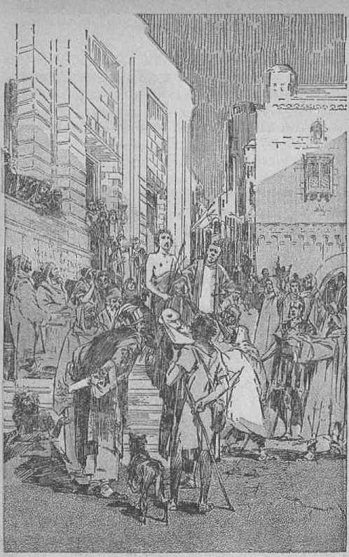
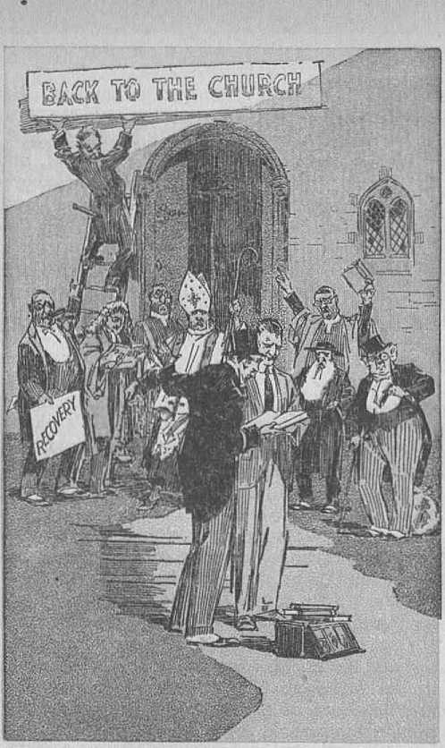
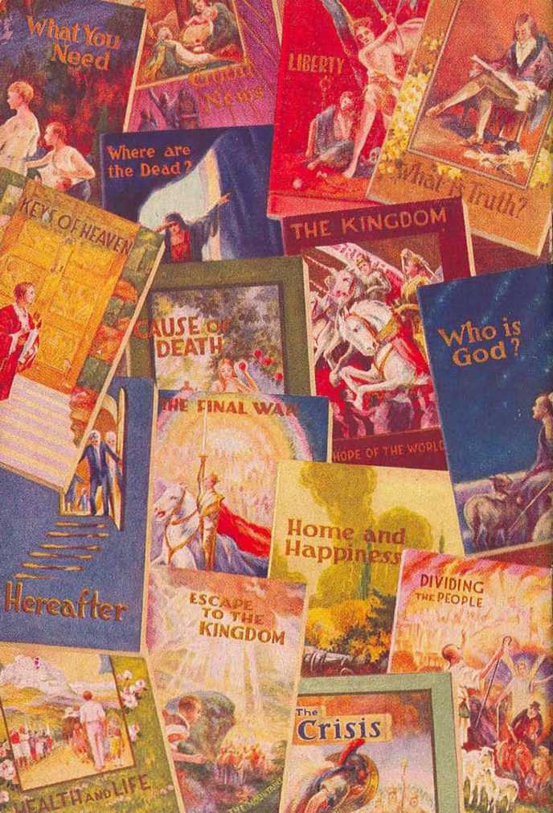

explained in
Two Bible Treatises
by
J. F. RUTHERFORD
Page
3 Preface
5 Introduction
9 Religious Intolerance: Why
42 Value of Knowledge and Understanding
In one year alone, 1933, Judge Rutherford’s books reached the astonishing total of 24,074,401 copies distributed. In this year of world depression, when the nations are trying to recover from the continual downward trend, Judge Rutherford’s books are in greater demand, because they bring to the people the only hope for the world. His lecture on “Religious Intolerance” has already been placed in millions of homes.
Copyrighted 1933 and Published by WATCH TOWER BIBLE AND TRACT SOCIETY International Bible Students Association Brooklyn, N. Y., U. S. A. Made in the United States of America
Branch Offices:
London, Magdeburg, Paris, Toronto, Strathfield, Cape Town, Berne, Copenhagen, Stockholm, and other cities.
JEHOVAH made man a free agent, holding him responsible for his intelligent acts. Jehovah never prevents man from expressing his mind. Intolerance does not at all apply to Jehovah and those who faithfully obey him, Satan the enemy has at all times held men in darkness and attempted to compel them to believe and practice what selfish men have taught them, Satan the Devil is the author and promoter of all intolerance. Whenever you find men or organizations trying to prevent others from hearing the truth, then you may be certain that such men or organizations are the servants of the Devil, regardless of what claims are made for them.
The Catholic hierarchy has been and is the most intolerant organization on earth. Falsely claiming that the pope is the one endowed with authority to interpret the Scriptures the Catholic hierarchy has kept the people in ignorance of the Bible and influenced them not to read it, and induced them to believe only what the Catholic hierarchy has taught. The result is that millions of good, honest people who desire to know the truth of the Scriptures have not had the opportunity to learn it. When anyone tells the truth to the people of and concerning the Bible the Catholic clergy cry out against such faithful witnesses of the Lord and say, Intolerant bigots,” like the robber who, desiring to divert attention from his own wrongful acts, cries out, “Stop, thief!”
The front cover of this booklet is an illustration of cruel intolerance and persecution carried on by the Catholic hierarchy and their allies against Jehovah’s witnesses. What follows in these pages explains why intolerance is practiced at the present time. The lectures appearing herein were broadcast by radio and by hundreds of transcription machines, and are now prepared in printed form for those who desire more knowledge.
The truth is of most vital importance to everyone. No organization should be permitted to stand in your way of getting the truth. Let no one deprive you of your individual privilege to learn of Jehovah and his gracious provision for your blessing. Study carefully the treatise herein. Get knowledge and understanding and learn the Lord’s way and rejoice.
TO ENABLE the readers to have a better appreciation of the speech of Judge Rutherford which follows, a brief explanation of the circumstances surrounding at the time of its delivery is here made. This introduction is made by A. K. Wagner.
On a certain Sunday in June, 1933, upward of fifty Christian men and women were arrested in Plainfield, N. J., and crowded into hot cells and kept there overnight without trial. These Christians were calling at the homes of the people and telling them about God’s kingdom for which Jesus taught all of his followers to pray; and this was the offense for which they were arrested. This good news angered the servants of Satan, the Catholic clergy of that community, who induced law officers to cause the arrest of those good people. In the absence of necessary accommodations these men and women wereicom-pelled to stand up all night, and next day were taken into court, where a farce trial was had by a highly prejudiced judge. Having no evidence against these Christians the judge of the court wrongfully compelled them to answer questions, the answers of which he construed against them, and refused to permit them to give testimony in their own behalf. Then this
G unrighteous judge committed them all to jail for a term of ten days. The treatment of these Christians was so outrageous that it shocked the sensibilities of honest people who heard about it. At the time Judge Rutherford was in Europe, and, being informed of the persecution of these Christian people, he immediately cabled to engage a theater building and certain radio stations to be used to convey his speech, which he would deliver to the public, on the subject “WHY IS RELIGIOUS INTOLERANCE PRACTICED IN THIS COUNTRY TODAY?”
The chief of police, a Roman Catholic, tried to prevent this meeting from being held. On the day before the speech was to be delivered a number of Christian men and women were distributing small handbills announcing the time and place of the meeting. This they had a perfect right to do, as there is no ordinance in Plainfield, and no other law, that prohibits such distribution ; besides, it was done for the people who might wish to come. Without any lawful right or excuse the distributors of these handbills were arrested by police officers and thrown into jail. Shortly thereafter police officers near the jail were heard discussing the matter of the distribution of these announcements that Judge Rutherford would speak next day at the Strand Theater, and one was heard to say to another: “He will be here tomorrow, and he will get what is coming to him.”
For many centuries the Catholic hierarchy has operated the most cruel, wicked and defamatory organization that has ever been on the earth. They employ coercion and the gag, and any other unlawful means necessary to accomplish their cruel purposes. When they want someone killed they make the killer believe that the priests can fully absolve him from all wrong and clear him from all punishment, either here or hereafter.
Two hours before the time for this meeting to begin armed policemen began to arrive at the theater. No one had invited them to come and no request had been made for any police protection, and none was needed, because it was a peaceable assembly for the discussion of a Bible matter, which the Constitution of the United States guarantees shall be held without interruption. Manifestly at the instance of cruel religionists these law officers were there, more than sixty in number, armed with heavy revolvers, sawed-off shot guns, riot guns and other instruments of destruction. Just before the beginning of the lecture police officers made an effort to provoke Judge Rutherford to a controversy, with the manifest purpose of finding some excuse to prevent the meeting. But in this they had no success. When Judge Rutherford stepped to the front of the platform to speak he was literally surrounded by armed men, as though he were a desperate criminal.
With guns to the back of him and in front of him and on every side he delivered the speech which now you are about to read. The judge of the court who had conducted the farce trial, and who at the time had indulged in cruel and improper speech toward the defendants, and who had defamed the name of Jehovah by his public declarations, sat immediately in front of the speaker and was compelled to listen, together with other officers who were doing the bidding of the Roman hierarchy. Of course, the representatives of the Catholic hierarchy would not know what God has promised, as stated in Psalm 34: 7: “The angel of the Lord encampeth round about them that fear him, and delivereth them.” The speaker proceeded to fearlessly and plainly point out to the audience that packed the theater, and to the far greater unseen audience by radio, why the Catholic hierarchy, which claims to represent God, constantly indulges in the persecution of Jehovah’s witnesses. With keen interest you will now read Judge Rutherford’s speech.
THIS SPEECH is not made for the purpose of holding up to ridicule or denouncing men for their misconduct and wickedness, even though there are those in this community and in this auditorium who justly deserve much castigation. Jehovah God will inflict punishment on them in his due time. My work is that of one of his witnesses to tell the facts. We have reached the time of greatest crisis in the history of man, and it is of vital importance that everyone know the facts and the reason for the existence of the same.
This speech is not made for the unfaithful clergy, nor for their blind dupes who attempt to hide behind the law and shield themselves in the performance of their wrongful acts. It is made for the benefit of the people who desire righteousness and fair dealing and who are anxious to follow out that course. Men claiming to be law-abiding citizens of New Jersey have tried to prevent the holding of this meeting and to thereby prevent you from hearing the truth. Even the chief of police of this city has asked the owner of this theater to cancel his contract
for the use thereof on this occasion, and that after the full rental price had been paid. The owner preferred to honorably stand by his contract rather than to yield to sinister influence. I ask you to calmly and dispassionately follow my speech to the end, and 1 hope that you may receive benefit therefrom.
It is necessary for me to briefly refer to certain events that have recently come to pass in this vicinity. A few weeks ago in the city of Plainfield more than fifty good citizens, and known to the officials to be harmless, were arrested without warrant or cause and thrown into prison. Twenty-nine of these prisoners were good, honest and faithful women. At the time the weather was exceedingly hot, and yet these twenty-nine women were crowded into three small cells, each made for one person, and most of them compelled to stand up all night. The next morning they were fingerprinted as though they were desperate criminals. In gross violation of the fundamental law of the land, and in utter disregard of the rights of other persons, those arrested were then brought before the so-called "court”, unlawfully compelled to testify against themselves, prevented from making their own defense, and were summarily convicted in the absence of law or evidence and immediately incarcerated in prison. Their only offense was that of going from house to house on Sunday and preaching the gospel of God’s
RELIGIOUS INTOLERANCE: WHY H kingdom, for the aid and comfort of the people. A more complete statement of the facts and proceedings of that mock trial is set forth in the Golden Age magazine under date of July 19, 1933, a copy of which, magazine you may have only for the asking.
I quote the words of the magistrate before whom this farce trial was had in which he referred to the ordinance which he claims had been broken, to wit: “That law is made to protect your and my family from impostors who go around and rob men.” The magistrate knew that all the defendants were Christian men and women and that they could not properly be classed as ‘impostors and robbers’; and in proof of this I quote further his words from the record, to wit: “I think your intentions are all right and that you are good Christian people.” If he was sincere in this latter statement his other words and conduct in connection with the case were wholly out of order. It is manifest that there was exercised by priests and clergymen some cruel and malicious influence which caused these inoffensive, innocent and devout Christian people, without just cause or excuse, to be incarcerated in prison.
Many good citizens of this land are asking why such outrageous things are possible in this country, where the fundamental law of the land provides that every person shall worship God according to the dictates of his own conscience.
In this time of greatest stress and suffering of the people these good Christian men and women, who earn their bread by daily labor, employ their days of rest, and particularly Sundays, in going from house to house to comfort and encourage the people and to point out to them that the hope of relief and blessing for mankind rests entirely upon Jehovah God’s kingdom. The real persecutors of these humble men and women are known to be prominent leaders in the religious world. The people are entitled to know why this religious intolerance is practiced in this day of enlightenment, and I shall submit to you the conclusive answer to that question.
The Bible, or Holy Scriptures, contains Jehovah God’s Word of truth. The clergy are compelled to admit that. Court officials lay their hand upon the Bible and solemnly swear by it to tell the truth. All such are therefore precluded from gainsaying the Bible as true, and they tacitly admit that they must be bound by the teachings of the Bible. By the Bible, and it alone, I shall answer the question why religious intolerance is practiced now in this country.
The Creator of heaven and earth is the Almighty God, whose name alone is Jehovah. The name Jehovah means "the Eternal One” and his purposes toward his creatures. There is a mimic god who opposes Jehovah God and who is man’s worst enemy, and the name of that mimic god is Satan the Devil. He is otherwise known as Serpent and Dragon. Centuries ago the Devil challenged Jehovah to place men on earth who would remain true and faithful to God under all conditions, the Devil claiming that he could turn all men away from and against Jehovah. That challenge raised the issue of who is supreme. Jehovah could have killed the Devil immediately, but had he done so the Devil would have been denied the opportunity to make proof of his challenge and all creation would have been denied the opportunity to choose voluntarily to serve either God or the Devil. Jehovah grants to every man the privilege of exercising freely his own will.
Jehovah God accepted the Devil’s challenge, and fixed a time limit, during which time the Devil should have full opportunity to prove his boasted challenge. Therefore Jehovah said to the Devil, as is recorded in the Scriptures: “But for this cause have I allowed thee to remain, in order to show thee my power; and in order that they may proclaim my name throughout all the earth.” (Exodus 9:16, Leeser) This means that in due time Jehovah would have his name declared in all the earth by his witnesses that the people might have the opportunity to choose as to whether they would serve Jehovah God or whether they would continue to serve the Devil. That time has now come; and that is the reason why the question for consideration today is of such great importance to you, regardless of what previous religious convictions you may have held. It is to your interest to have the truth, even though the truth proves all religions to be false. It is only by the truth that we shall be made free and learn the way to eternal life.—John 8:32.
From the very beginning the Devil attempted to destroy every one who was faithful to God. He caused Abel to be murdered, and is therefore designated “a murderer from the beginning1’. (John 8: 44) Early in the age of man the Devil organized religion and used it as a means of deception to turn the people away from Jehovah. In the name of religion the greatest amount of intolerance has been practiced amengst men. Intolerance is never employed by Jehovah or by any of his faithful servants, but it is used by and is limited entirely to Satan and to his servants. The religions which the Devil has employed to turn men away from Jehovah God appear at different times under different names, but the general Bible name therefor is Baalism. The word “Baal” is derived from the word meaning devil; and therefore every religion, regardless of name, and which the Devil has employed to turn men away from Jehovah, is properly called “Baalism”. For centuries the Devil has been the invisible ruler of this world and, as such, has constantly blinded men lest they learn the truth. (2 Corinthians 4: 4) Long centuries ago Jehovah gave his word that in his due time he would send a righteous ruler who would rule in the stead of Satan and who would destroy the Devil and his organization and who would then give abundant blessings of peace and life to the obedient ones of the human race. God always keeps his promises, and that promise is absolutely certain to be fulfilled.
Jehovah God organized the Jews, or Israelites, into a nation and gave them the truth. He did not do this because the Jews were naturally better than others, but because he would use them as his typical people by whom he would teach others lessons of great importance, and, especially, that if they would live they must be obedient to Jehovah God. The Jews agreed to obey Jehovah’s law, but later they yielded to the subtle and seductive influence of the Devil, and that nation, with but a few exceptions, turned away from Jehovah God.
To his chosen people Jehovah sent his faithful prophets, whom he made his witnesses in the earth to testify his truth to the people. Because these faithful prophets testified to the truth they suffered all manner of persecution at the hands of bigots and intolerant ones in the religious organization. From the Scriptures I quote the following concerning those faithful witnesses of Jehovah, to wit: “And what shall I more say? for the time would fail me to tell of Gedeon, and of Barak, and of Samson, and of Jephthah; of David also, and Samuel, and of the prophets; who through faith subdued kingdoms, wrought righteousness, obtained promises, stopped the months of lions, . . . And others had trial of cruel mockings and scourgings, yea, moreover, of bonds and imprisonment: they were stoned, they were sawn asunder, were tempted, were slain with the sword: they wandered about in sheepskins and goatskins; being destitute, afflicted, tormented; (of whom the world was not worthy:) they wandered in deserts, and in mountains, and in dens and caves of the earth. And these all, having obtained a good report through faith, received not the promise.”—Heb. 11:32, 33, 36-39.
Who caused the persecution of those faithful prophets? It is obvious that Satan by and through his intolerant religious agents did so. God’s agents would not torture and persecute his own people. God permitted Satan to do his worst against those men, and at the same time afforded an opportunity to them to prove their integrity and faithfulness to God. They proved their faithfulness, sealing their testimony with their lifeblood.
Then Jehovah God sent to earth his great Prophet and Witness, Jesus, his beloved Son. Today big religionists, public officials and the metropolitan press speak with scorn and ridicule of men and women because they designate themselves “Jehovah’s witnesses”. In this con-
"Crucify him, crucify him.”
Religious Intolerance’s Greatest Crime Page 18
connection I mention the fact that Jesus Christ was Jehovah’s Great Witness, and it is man’s greatest privilege to follow in the footsteps of Jesus and to be a witness to the name of Jehovah. When on earth Jesus bore witness to the name of Jehovah. He was haled before the then great Roman ruler of Palestine, and in answer to a question of Pilate he said: “To this end was I born, and for this cause came I into the world, that I should bear witness unto the truth.”— John 18: 37.
Jesus, the holy and harmless One, who never did a wrong, yet was charged with every crime known to the calendar, and time and again men sought to kill him. Finally he was arrested on the false charge of sedition and was brought before the court, and his trial was had, which trial was a farce and mockery from beginning to end. The trial of the fifty witnesses of Jehovah in Plainfield a short time ago forcibly reminds one of the trial of Christ Jesus. Read, if you will, the history of that trial in the book designated Deliverance and mark the similarity between the two. Jesus was compelled to testify against himself, even as men and women were made to bear witness against themselves in the Plainfield trial recently had. In both instances such course of action was unlawful. Jesus was convicted without just cause or excuse and was put to an ignominious death, and this was done by a court made up of religionists who claimed to "be servants of Jehovah God. Today history is being reenacted.
Jesus and his apostles did not build houses in which they assembled the people to preach to them, but they went from house to house, to the homes of the people, and taught them the truth, even as Jehovah’s witnesses are doing in this day. (Acts 20:20; Luke 19:5) The apostles of Jesus Christ, because they preached the gospel, were also maltreated, arrested and thrown into prison. These faithful apostles were abused by court officers and ordered to leave the community and to refrain from their work, and to them the apostles replied: "We ought to obey God rather than men,” because "we are his witnesses”. (Acts 5:29,32) The faithful apostles continued to bear witness to the name of Jehovah, and their maltreatment and persecution continued and they all died as martyrs, sealing their testimony with their lifeblood.
Following the days of the apostles true Christianity continued to grow, and the Roman emperor Constantine, manifestly for a selfish purpose, formed a state religion and labeled it “Christianity” on earth. There is where the Papal system of Rome had its birth. Thereafter followed the most wicked inquisition and persecution of the true followers of Christ Jesus. The fires of torture were kept burning for years in the countries of Italy, Spain, France, Mexico and other places, and millions of people, by such inquisition and torture, were compelled to support the Papal religious system or Catholic hierarchy. I am referring to these facts briefly in order to show the constant course of religious intolerance that has existed and persisted for centuries, and then I shall point out from divine prophecy the cause for such unjust and wicked treatment of innocent human creatures.
Religious intolerance and persecution maliciously practiced in Europe drove brave men and women to the bleak shores of America, that there they might find a refuge where they could worship God in peace and without interference. It was those brave souls who laid the foundation of the American republic. So completely had religious intolerance been burned into the minds of these early immigrants to America that the framers of the United States Constitution and the constitutions of the various states expressly prohibited by such fundamental law any interference with any person in preaching the gospel, and provided that men should be privileged to serve God and preach the gospel according to the dictates of their own conscience.
Selfish and cruel organizations, parading under the name of “Christian”, have steadily and constantly increased in America. They have grown in numbers and grown in power. One of these organizations, particularly the Papal system, has made every possible attempt to control the United States Government, but up to this hour, thank God, it has never been able to put one of its crowd in the office of president of the United States. The people of America, lenowing the history of this system, have resisted every encroachment upon the political affairs, and for this reason the Papal representatives have been the ones who have howled the loudest about bigotry and intolerance.
In these last days, when the faithful followers of Christ Jesus under the clear command of the Almighty God go about to tell the truth to the people in order that the people may be aided and receive comfort, these witnesses are subjected to the most vicious persecution, and this is done upon the pretext of 'protecting the people from impostors and robbers’. It is apparent to all that such pretexts or claims are hypocritical and false in the extreme. The persecution of Jehovah’s witnesses in Plainfield and vicinity during the past few months has greatly shamed and stunned those who love the principles upon which the American government is founded. The fiasco in the form of a court trial that was enacted in Plainfield recently by men who had sworn to render fair and even-handed justice to its citizens shocks the sensibilities of every self-respecting American lawyer and causes all honest Americans to hang their heads in shame and to ask, How is it possible for such religious intolerance to be practiced in America now?
INSTIGATORS
The fact that men claim to represent and serve Jehovah God is no evidence that their claim is true. On the contrary, the known facts abundantly show that wicked men and wicked systems parade under the name of God and his Christ who do not have the spirit of Christ, but who are cruel in the extreme and who manifest the spirit of Satan the Devil. Those who caused the persecution of Jehovah’s prophets were all religionists. The men who persistently persecuted Jesus, and who caused his death, were the clergymen of that day, and who posed before the people as teachers of God’s Word. The great inquisition practiced for years in Spain and other countries was instigated and carried forward by clergymen of the Papal system. The intolerant persecution of Jehovah’s witnesses in New Jersey and other places in this day is instigated and pushed forward by the clergymen who pose before the people as preachers and servants of Jehovah God. Jehovah is the God of justice and love, and he never persecutes any creature; and no one who is the servant of God could or would persecute any man. Whom, then, do these instigators of religious persecution in modern times represent? Jesus answered that question when he said to the clergymen of his day who were persecuting him: “Ye seek to kill me, a man that hath told you the truth, which I have heard of God: . . . Why do ye not understand my speech! even "because ye cannot hear my word. Ye are of your father the devil, and the lusts of your father ye will do. He was a murderer from the beginning, and abode not in the truth, because there is no truth in him. When he speaketh a lie, he speaketh of his own: for he is a liar, and the father of it.” (John 8:40,43,44) Jesus authoritatively shows that those men who fraudulently claimed to represent God were in fact the active agents of Satan the Devil. That rule applies at all times.
Then turning to his true followers Christ Jesus said to them: “If they [the clergy] have persecuted me, they will also persecute you.” (John 15:20) And thus he fixes the responsibility for such persecutions upon the clergy. It was the clergy class that persecuted the apostles of Jesus to death. It was the clergy who have instigated and arc pushing forward the intolerant persecution of Jehovah’s witnesses in New Jersey; and, upon the authority of the statement made by Jesus, these persecutors fraudulently claim to be Christians and to represent God but in fact are the agents and representatives of the Devil and his bidding they will do.
Now I submit to you the conclusive proof from the Scriptures as to why religious intolerance is practiced in this day; and the specific answer is of vital importance to every human creature, regardless of religious convictions.
Jehovah God declares in his Word that he permits Satan to go on unhindered in his wicked work until the end of a certain and fixed time and at that time he would then destroy Satan and all of his agencies. When Jesus ascended on high Jehovah said to him: ‘You must wait until my due time to put down the enemy and destroy him.’ (Psalm 110:1) The Scriptures then show that the year 1914 marks the end of that period of time for waiting and the beginning of the reign of Christ. In his great prophecy recorded in Matthew twenty-four Jesus states that that time would be marked by a world war, followed quickly by famine, pestilence, revolution and distress of nations. All of these things have come to pass since, and which began to have fulfilment in 1914. At the same time the Scriptures show that a war was fought in heaven by Jesus and his angels against Satan and his forces and that Satan was ousted from heaven and cast down to the earth. This record is found in the twelfth chapter of Revelation. All of you know that since 1914 the peoples of earth have been in great distress and perplexity. The reason for such suffering and perplexity on the part of the people is made clear by the words of Jesus recorded in Revelation 12:12, which read: “Woe to the inhabiters of the earth, and of the sea! for the devil is come down unto you, having great wrath, because he knoweth that he hath but a short time.” Satan knows that his time is short until the great battle of Armageddon, which will then be decisive as to who is supreme, and at which time Satan’s organization shall be destroyed. Before that great battle takes place, however, God commands that his witnesses must go through the land and bear testimony before the rulers and before the people of and concerning Jehovah and his kingdom. (Isaiah 43:10-12; Matthew 24:14) This is done in order that the people may be informed of God’s purpose to destroy the wicked one and to establish a righteous government on earth which will be the means of the complete uplift and blessing of the human race.
In obedience to this commandment of Jehovah faithful men and women devoted to God and his kingdom now go from house to house preaching the good news or gospel of the Kingdom. They are not doing such work for commercial gain, but they are doing it at great financial loss to themselves. They work in the shops and in the fields to earn their bread and then devote their spare time to preaching the gospel according to God’s commandment, and this they do because they love God and have agreed to do his will. In doing this they are but pursuing their divinely given rights of worshiping God according to the dictates of their conscience, and with which rights no municipality, state or other government can properly and rightfully interfere.
Since the Constitution forbids the enactment of any law or laws interfering with the preaching of the gospel, then why are these faithful witnesses of Jehovah arrested and thrown into jail? That question is answered by the Lord, at Revelation 12:17. Jehovah’s testimony is committed primarily to Christ Jesus, and he commits to his faithful followers, who are also Jehovah’s witnesses, the obligation of delivering such testimony. For this reason Satan the Devil seeks to destroy every one who is telling God’s truth. Jehovah’s witnesses now on earth constitute the remnant of God’s organization, which organization is symbolized in this scripture by a woman, and the Lord says concerning these that the Devil is extremely mad at them and goes forth to make war against those who keep the commandments of God and who have the testimony of Jesus Christ. (Revelation 12: 17) That scripture is conclusive proof that the Devil is the one who instigates and carries forward the persecution of Jehovah’s witnesses and that the visible persecutors of these witnesses of Jehovah are acting for and as agents of the Devil. Even though priest, clergymen and other associates in persecuting Jehovah’s witnesses claim to be Christian, the facts show that such claims are false, for the reason that God and Christ Jesus do not persecute anyone and certainly God would not have one set of his servants to intolerantly persecute another company of his servants.
If these fifty or more men and women who were recently persecuted and imprisoned upon the charge of being peddlers and hawkers are in truth and in fact Jehovah’s witnesses and his representatives, and if the charge is false, why then would Jehovah permit them to be thus wrongfully treated and persecuted by men who represent the Devil ? The answer is, in order to cause the enemies of God to identify and mark themselves and to afford opportunity for Jehovah’s witnesses to prove their faithfulness.
The Scriptural answer to that question is illuminating and of vital importance. The Scriptures declare that what came to pass upon the Jews, or Israelites, foreshadowed what must come to pass on “organized Christianity” at the end of the world, where we now are. (1 Corinthians 10:11) “Christendom,” or “organized Christianity”, is the antitype of ancient Israel. The Devil overreached the Israelites and turned them away from God. Because the Jews indulged in Baal religion and persecuted Jehovah’s faithful prophets who were sent to teach them, Jehovah selected Jehu, made him His executioner, and sent him to inflict punishment upon the Baal worshipers of Jewry. On that occasion Jehu was a type of the Lord Jesus Christ, whom God has appointed to execute his judgment against all of his enemies, and particularly against “Christendom”.
Jehu called a great assembly of the people, and every one of the Baal worshipers assembled at one place. Then Jehu commanded that all the preachers, prophets, clergymen, priests, servants and worshipers of Baal should put on garments by which they would identify themselves as the followers and worshipers of Baal, and this they did. In that manner Jehu caused every one of them to identify himself, and to take his stand either on the side of Baal or on the side of Jehovah God. This marvelous picture is set forth in 2 Kings 10:19-28. When the identification and division was complete, then Jehu directed his soldiers to slay utterly every one of the Baal worshipers, and this was done; and thus ended Baal worship in Palestine at that time.
That graphic identification and the slaying prophetically foretold the identification and destruction of all false religions in the world, and particularly the destruction of all those who defame God’s name and persecute his faithful witnesses.
The purpose of Jehovah’s witnesses in going from house to house in this day and preaching the gospel of God’s kingdom is not to convert the world. The purpose, according to the commandment of God, is to notify the rulers and the people that Jehovah is the God supreme, and that his kingdom is at hand, and that God will now vindicate his name, and that he will now afford the opportunity to all who hear to identify themselves as being either on the side of Jehovah God or on the side of his enemy the Devil. That explains why during the time since the World War Jehovah’s witnesses have been permitted to proclaim the message of his kingdom throughout “Christendom”, and explains why it has been possible in that time to print the message of the kingdom in fifty-eight different languages and to put into the hands of the people more than 140 million books containing that message. All this work has been done at God’s commandment to give the people an opportunity to identify themselves as to where they stand. This is God’s work, and no human power can stop it. The intolerant persecutors may throw many of Jehovah’s witnesses into prison and kill others, but that will not stop the witness work. Where one falls in the ranks Jehovah God will raise up others to take his place. He has decreed that the testimony must be given, and it will be given.
Jehovah’s witnesses are preaching the gospel of the kingdom, not for filthy money, but in obedience to God’s commandments, and the only way for men to be faithful to Jehovah and to their covenant is to obey his commandment. Like the early apostles the witnesses count not their lives dear unto themselves, and they are determined to obey God and not man; and for this reason they go on amidst great opposition, bearing testimony to the kingdom of Jehovah.
The proof shows that in every instance it has been and is the priests, pastors or clergymen of so-called “organized Christianity” who cause the persecution and ill treatment of Jehovah’s witnesses. Those clergymen are therefore most reprehensible. By their action they have identified themselves as being against God and for his enemy the Devil. The message of the kingdom in printed form has been supplied to them by Jehovah’s witnesses, and that without charge, and they now without just cause or excuse attempt to hide their wrongful action behind some municipal ordinance and use this as a shield while they carry on the persecution of Jehovah’s witnesses. Thus they completely identify and mark themselves. The rulers of "Christendom” have likewise been served with copies of the message of the kingdom, which affords them an opportunity to take their stand on one side or the other. Police officers, magistrates and judges of the courts are also putting on the garments and thus identifying themselves as to where they stand. Jehovah God permits the persecution of his faithful witnesses now, therefore, for the very purpose of furnishing opportunity for 14011 to identify and mark themselves and to thus take their stand on one side or on the other.
Now the message of the kingdom must go to the people, that they may have an opportunity to identify themselves and to take their stand on one side or the other. The message or gospel of the kingdom is therefore separating the people into two general classes, and Christ Jesus is the one who is doing that separating work. With which class will you identify yourself? That is a question now which every one who hears must answer. You cannot identify yourselves as being on God’s side and at the same time connive at and sympathize with or approve the persecution of Jehovah’s witnesses. One of the reasons, therefore, that God permits his witnesses to thus suffer is for your benefit, that you may see the truth and have the opportunity of identifying yourself with the right side.
SHEEP AND GOATS
The last prophetic parable Jesus spoke when on earth was that concerning the sheep and the goats, and which prophecy he said would find its fulfilment at the time of his coming for judgment. That time is now here, and the people are thus gathered and by him made to identify themselves, even as Jehu, the prototype of Jesus, caused the Israelites and Baal worshipers to identify themselves. Jehovah has given the people of the nations of "Christendom” a knowledge of his kingdom, and thus he has gathered them before his Executioner, and who says, as it is written in Matthew 25: “And he shall separate them [the people] ... as a shepherd divideth his sheep from the goats.” “His sheep” means the class that are on the Lord’s side, while the goats represent the class that are against the Lord and on the Devil’s side. Continning, then Jesus said: “And he shall set the sheep on his right hand, but the goats on the left.” (Matthew 25:33) In this striking prophetic parable Jesus counts his true and faithful followers as though they were himself, and the people who have been good to his followers he credits as being good unto himself, and those who have illtreated his brethren or followers he counts as doing evil to himself. Thus he brings the application of the scripture right down to the present day. He shows that if a person abuses, illtreats or persecutes Jehovah’s witnesses, that person thus identifies himself as an enemy of God and of Christ.
Many of you people have been glad to have Jehovah’s witnesses call at your door and tell you the comforting message concerning God’s gracious provision for your blessing. In turn you have given them a cup of refreshing water to drink; and if you found one of them sick you gladly ministered unto that sick one. When the twenty-nine harmless women were crowded into those hot prison cells and required to stand there all night amidst suffering, some of you stood in the streets at midnight and sympathized with them and wished that you might do some good to them. You wanted to comfort them by your presence. The Lord knew your heart condition and your desire and your kind sympathy and he counts that goodness as unto himself and he likens such who thus sympathize with him to sheep. To such Jesus says: “For I was an hungred, and ye gave me meat: I was thirsty, and ye gave me drink: I was a stranger, and ye took me in: naked, and ye clothed me: I was sick, and ye visited me: I was in prison, and ye came unto me.” (Matthew 25: 35, 36) On the other hand there is a class of persons pictured by goats, because such men are cruel and heartless. Such men are extremely selfish. They have caused innocent men and women to be thrown into prison because they wanted to keep you in ignorance of the goodness of God’s kingdom and to save themselves from being exposed as false teachers and impostors. When men and women assembled in the streets in close proximity to the prison for the purpose of expressing by their presence their sympathy and comfort to the imprisoned ones, and when some tried to make a photograph of the sympathizers and the prisoners, such sympathizers, as well as the prisoners, were illtreated and thrown into prison. Thus the harsh ones, cruel and intolerant persecutors, put themselves in the goat class, and to these billy goats Jesus now says: “For I was an hungred, and ye gave me no meat: I was thirsty, and ye gave me no drink: I was a stranger, and ye took me not in: naked, and ye clothed me not: sick, and in prison, and ye visited me not. Then shall they also answer him, saying, Lord, when saw we thee an hungred, or athirst, or a stranger; or naked, or sick, or in prison, and did not minister unto thee? Then shall he answer them, saying, Verily I say unto you, Inasmuch as ye did it not to one of the least of these, ye did it not to me.” (Matthew 25:42-45) Thus Jehovah permits cruel and selfish men to intolerantly persecute his faithful witnesses in order that his faithful ones may bear testimony to his name and at the same time cause the persecutors to identify themselves as being against God and his kingdom. Clergymen who pose as your spiritual advisers, and public officials who have sworn to look well to your general interest, have violated their obligation, played the people false, reproached and sneered at and defamed the name of Jehovah God and his Christ, and thus they have put on the garments and have identified themselves as God’s enemies.
Now, if you will, hear the words of final judgment of Jehovah pronounced by Christ Jesus concerning these two classes who have thus identified themselves. To those who identify themselves as lovers of truth and righteousness, and who are designated under the symbol of harmless sheep and whom the Lord thus places
on his right hand of favor, lie now says: "Come, ye blessed of my Father, inherit the kingdom prepared for you from the foundation of the world.” Happy is the lot of such!
To the cruel, malicious and ruthless persecutors of Jehovah’s witnesses and detainers of God’s name, the great Judge, Christ Jesus, now says, as it is written (verses 41 and 46): “Depart from me, ye cursed, into everlasting fire, prepared for the devil and his angels. . . . And those shall go away into everlasting punishment: but the righteous into life eternal.” Furthermore Jesus said: “Shall not God avenge his own elect [witnesses]?” Then he answers his own question and says: "I tell you that he will avenge them speedily.”—Luke 18:7,8.
Tn the past two years and more the clergy of this state have persistently and intolerantly persecuted Jehovah’s witnesses, not for doing wrong, but because these faithful men and women at great financial and physical inconvenience to themselves have walked in the roads and come to your homes to bring you aid and comfort by bearing testimony to the name of Jehovah and his kingdom. By the intolerance of these priests and clergymen, aided and supported by policemen, they have thus prevented many honest Catholics and Protestants from hearing the message of God’s kingdom. They have done the people a positive injury and have abused and defamed God’s holy name. It appears to
me that by the long and cruel persecution of these faithful men and women God has permitted this day to come that the honest people may hear the truth and have the opportunity to sec how they have been grossly deceived by men who should know better.
As further proof that God has permitted his faithful witnesses to suffer at the hands of intolerant persecutors in order to cause the persecutors to identify themselves as against Jehovah, note the words of Jesus addressed to his faithful followers at Mark 13: 9: “They [the intolerant persecutors, or clergy and their allies] shall deliver you up to [the courts]; and in the synagogues ye shall be beaten; and ye shall be brought before rulers and kings for my sake, for a testimony against them," that is, against your persecutors.
Every man must stand before the judgment seat of Christ, and these men who have wrongfully and intolerantly caused the persecution of Jehovah’s witnesses will never be heard to make the defense that they did not know they were fighting against God. (2 Corinthians 5:10) They claim to be teachers of the Bible, and they are bound to know what is therein contained. By their course of action they oppose the message of God’s kingdom, and thus they bear testimony against themselves that they are guilty before God. The hypocritical and false claim that they are punishing Christian men and women in order to 'protect the people against impostors and robbers’ will be no excuse or defense before the Lord.
The faithful witnesses of Jehovah who thus suffer for righteousness’ sake thereby maintain their integrity before God. Filthy prisons will not deter these men and women from continuing to give their testimony. They will rejoice to continue their faithfulness unto God even unto death and to suffer as Christ Jesus suffered. To them therefore the Lord caused these words to be written, at 1 Peter 4:1.4: "If ye be reproached for the name of Christ, happy are ye; for the spirit of glory and of God restcth upon you: on their part he is evil spoken of, but on your part he is glorified.”
But shame upon the priests and clergymen who have connived at and caused the persecution of Jehovah’s witnesses in order that they might keep the people in ignorance of the truth and thus shield themselves from exposure; shame upon those public officers who have been ready and willing to class Jehovah’s witnesses as selfish peddlers and hawkers in order that they might serve their own selfish ends; shame upon the lawyers who practice upon the bench and before the bar, who because of fear of losing some personal advantage have side-stepped the issue and failed and refused to decide squarely the question as to whether or not men can be prevented from preaching the gospel of God’s kingdom by the enactment and enforcement of municipal ordinances leveled against peddlers and hawkers.
The reason for this is that we have come to the great crisis foretold by the holy prophets of old. God has placed Christ his King upon his throne and has seated him in his temple for judgment and commands all men to hear him. Because of the subtle and wrongful influence of the clergy as Satan’s agents, lawyers, judges, and public officials are ashamed of the name of Jesus Christ and of Jehovah and are ashamed to do their duty concerning the construction and enforcement of the law of the land. To such fearful ones Jesus now says (Luke 9: 26): ‘‘For whosoever shall be ashamed of me and of my words, of him shall the Son of man be ashamed, when he shall come in his own glory, and in his Father’s, and of the holy angels.”
The world has ended and the Devil must surrender possession. Before he is completely ousted, however, God commands that his testimony concerning the kingdom must be delivered by his witnesses. Regardless of all opposition these faithful witnesses will proceed to give that testimony, and when that work is done, Jesus declares, there shall immediately follow upon the world the greatest tribulation ever known. (Matthew 24:14-22) That will be the battle of the great day of God Almighty, and not one persecutor of Jehovah’s witnesses shall survive. (Jeremiah 25:34) To the people of good will, and who want to do right and who want to identify themselves on Jehovah’s side, he now says through his prophet: ‘Before the wrath of God break upon you, seek meekness and righteousness, if you would he hidden and taken through that trouble.’ (Zephaniah 2:1-3) Let every one, therefore, who would live, refrain from the intolerant persecution of Jehovah’s witnesses, seek meekness and do that which is right. In the language of the Scriptures: ‘If this work be of men it will come to naught, but if it be of God ye cannot overthrow it.’—Acts 5:38, 39.
To his faithful witnesses Jehovah by his Word now says: ‘Be of good courage, the eternal God is thy refuge and underneath are the everlasting arms.’ At the hands of religious hypocrites you have suffered much persecution for righteousness’ sake. Our Lord Jesus likewise suffered, and blessed is the man or woman ■who follows in his steps. (1 Peter 2:21) It is to you as his faithful followers that Jesus now says (Matthew 5:10-12): “Blessed are they which are persecuted for righteousness’ sake; for theirs is the kingdom of heaven. Blessed are ye, when men shall revile you, and persecute you, and shall say all manner of evil against you falsely, for my sake. Rejoice, and be exceeding glad; for great is your reward in heaven; for so persecuted they the prophets which were before you.”
The head of the Roman Catholic hierarchy announced that the year 1933 is a holy year, made so by his own personal declaration. In a speech broadcast over many radio stations I stated that such declaration by the pope concerning a holy year, and that it would bring in peace and prosperity, is a presumptuous sin before Almighty God. The Catholic press throughout the land denounced me for making that speech, and made many false statements against me. I replied in a letter addressed to them, and, they having failed to publish it, the Golden Age magazine has published it, and each of you may have a copy of that letter, together with the speech on the “holy year”, as you pass out of the building. Peace and prosperity will not come to the people by the efforts of selfish men. Only God’s kingdom under Christ will bring that blessing. No so-called “religions organization” has any right to keep the people in ignorance of the truth. Let the people hear the truth and then decide for themselves what to do.
For centuries the practice of the Catholic hierarchy has been to teach the people the doctrines of men, and not the truth as found in God’s Word. They have practiced religion and used it as a means of extracting great amounts of money from the poor and honest people. They tell the people not to study the Bible but to hear what the priests tell them. They claim that the pope is the only one who can interpret the Scriptures; which claim is wholly false. The Bible was written for the benefit of all who love God, and therein it is stated that no scripture is of private interpretation. It is the Word of God, and concerning it Jesus said: “Thy word is truth.”
The Catholic priests have put the people in fear and thus held them in subjection to the papal organization. They have thereby brought them into the snare of Satan the enemy. It is written, hi Proverbs 29:25: “The fear of man bringeth a snare; but whoso putteth his trust in Jehovah shall be safe.”—A.R.V.
I insist that the clergy of the papal hierarchy represent the Devil and not Jehovah God. I challenge the pope of the Catholic hierarchy to appoint any man he will on earth, to represent him and his organization, and that I will debate this question by radio before the American people, each side to pay one-half the cost. You must choose whether you will follow the Devil’s representatives or follow Christ. You must hear the truth in order to know which way to go. The truth is found only in the Word of Jehovah God.
MEN seek after that which they believe will bring them personal benefit. In seeking after that which is desired, if a man takes the wrong road he is certain to come to disappointment and sorrow. If he takes and pursues the right road success crowns his efforts. It is therefore of great importance that a man at the very outset know which is the right road to take.
Material wealth and worldly fame are the things which men of the world principally seek after. The existence of man on earth is brief, and when he dies he must leave behind him all his material wealth and his worldly fame can no longer be enjoyed by himself. That which thoughtful men desire above all things else is life with the attending blessings of health, peace and happiness. Mon madly rush about in their efforts to acquire material wealth and fame, and, while they may desire to live, very few men have any real conception of how life in happiness may be gained. What is needed to learn the right way is knowledge and understanding.
What are knowledge and understanding? and what is the distinction between the two? Prop-
42 erly defined, Knowledge means information gamed from truthful testimony. Understanding means to take hold of and comprehend the true meaning of the testimony received and to thereby be enabled to know for a certainty what is the right course or road to take. One who pursues such a course is wise, and the final result, to him is certain to be good. One may have knowledge of the existence of a thing and have no understanding of its meaning. The two are necessary to go together that good may result.
How may one know for a certainty that he is gaining true knowledge and that he is having the proper understanding of the information received? If he follows the teachings of man he cannot be certain; for the reason, all men are imperfect and the teachings of men are based upon human information. Regardless of the good intentions that a man may have, his opinion may be entirely worthless. But it is possible for us to know for an absolute certainty whether or not we are receiving true knowledge and getting the correct understanding, and that information I shall now try to impart to you.
It has been my privilege to bring to your attention on former occasions the conclusive proof that there is one true God whose name is Jehovah and who is almighty in power, perfect in wisdom, exact in justice, and wholly unselfish, and that he is the source of light, truth and life. All information received from him is truthful and wholly trustworthy. Truth is also called light, and light makes known to us the things that we want to know.
There is also, as the proof shows, a false or mimic god, whose name is Satan the Devil, who is the very embodiment of wickedness and who is the enemy of all men. He is bent on the complete destruction of the human race. Amengst other things the Scriptures designate him as the ‘prince of darkness’, and he and his wicked associates are rulers of darkness controlling this world. (Ephesians 6:12) It is the wicked ones who make war against all who love and serve the light of truth which comes from Jehovah God.
In order to gain true knowledge we must be assured that the information we receive emanates and proceeds from a truthful source. Concerning Jehovah God it is written: “God is light, and in him is no darkness at all.” (1 John 1: 5) Jehovah sent his beloved Son to the earth to teach the truth to the people, and of him it is written that Christ Jesus is "the true Light, which lighteth every man” who desires to be enlightened. (John 1:9) Concerning the Holy Scriptures, which constitute the Word of Jehovah God, Jesus said: “Thy Word is truth”; and concerning the way that leads to endless life and happiness he further stated: “This is life eternal, that they might know thee the only true God, and Jesus Christ, whom thou hast sent.” (John 17:3) That assures us that the Bible is the source of all truth concerning the origin and destiny of the human race.
You may reply that there are several hundred different denominational religious organizations called “churches”, all teaching different doctrines and all claiming to base their teachings upon the Bible, and, you ask, how may we know who is right? The answer is that all of these organizations have some knowledge of the text of the Bible but are utterly without understanding as to the meaning thereof. The Bible has had the widest distribution of any book published, and yet there is without doubt a greater lack of knowledge and understanding of it by intelligent people in "Christendom” than of any other book in existence. The fact that a man is educated and graduated from a theological university and holds all the degrees of that university is no proof whatsoever that he has a knowledge and understanding of the Bible, He may be able to repeat from memory every text in the Bible and yet have no understanding or true conception of the meaning thereof. It will be conceded that the majority of the educated clergymen of this day even repudiate the inspiration of the Scriptures and have set up man’s wisdom as superior to that expressed in the Bible.
Jehovah God reveals an understanding of his Word only to those who are devoted to him. Mon who are worldly wise, that is to say, who follow their own wisdom or the wisdom of other men, cannot understand the Scriptures. Such are natural or worldly men, and of them it is written: “The natural [or worldly] man receiveth not the things of the spirit of God; for they are foolishness unto him: neither can he know them, because they are spiritually discerned.” (1 Corinthians 2:14) It is impossible for any man to please God and receive an understanding of his Word unless that man has faith in God and in his Word. (Hebrews 11: 6) Faith means to have a knowledge of the text of the Bible, believe that the texts are true, and confidently rely thereon. There is no other means of acquiring faith.
A college education is not one of the essentials to the understanding of the Bible. That which is of first importance to gain a knowledge and understanding of the Bible is to know that Jehovah is God and have a proper fear of him and not to have fear of man. It is only to such that God reveals an understanding of his Word. (Proverbs 1:7) The psalmist (25:14) says: “The secret of the Lord is with them that fear him; and he will shew them his covenant.” The understanding and interpretation of the Bible is not committed to any one man or any company of men. The Bible was written for all persons who honestly seek to understand it and who follow God’s appointed way to gain an understanding thereof. It is written that the Scriptures are given for the instruction of the man who devotes himself to God. None other can have an understanding.^ Timothy 3:16,17.
Jehovah God created man and made him the most intelligent of his earthly creatures. It is to be expected that God would reveal his truth to the reverential man; and so he does. To the man who seeks to know God and his Word Jehovah says: "Conic now, and let us reason together, saith the Lord: Though your sins be as scarlet, they shall be as white as snow; though they be red like crimson, they shall be as wool.” (Isaiah 1:18) That means, regardless of how great a sinner a man is, if he turns his heart to Jehovah and diligently seeks to know the truth in God’s appointed way he will be led into the light of truth. It means that we must take God’s Word and study it from a reasonable viewpoint and not attempt to substitute human wisdom for divine wisdom. Note that God says to those who are seeking the right road to travel : ‘'Trust in the Lord with all thine heart; and lean not unto thine own understanding. In all thy ways acknowledge him, and he shall direct thy paths.” (Proverbs 3:5,6) This is positive proof that it is unsafe to follow human reasoning to the exclusion of God’s Word.
Public officers today, by the aid of high dignitaries in the church organization, are making strenuous efforts to pull the people out of depression and distress and to recover the world. A high public official stands before the people and says in connection with world recovery: “I have faith in divine guidance in this effort to recover the world from depression.” If he had faith in Jehovah God, then he would take God’s Word as a guide, because the Word of Jehovah God is given for a guide to the one who trusts in and pleases Jehovah. (Psalm 119:105) The fact that one claims to have faith in divine guidance is no proof that he has faith; and this conclusion is further supported by the fact that his course of action is contrary to what the Word of God states. What that man lacks is knowledge and understanding.
Jehovah God’s Word makes it plainly to appear why there is great distress and perplexity and depression now upon the nations of the world. The testimeny of Jehovah’s great Witness, Christ Jesus, which is recorded in the Scriptures is to the effect that the beginning of the end of this wicked world would be marked by a world war, in which the nations of “Christendom” would engage. That world war began in 1914, and therefore that date marks the beginning of the reign of Christ and the ending of Satan’s rule without interruption. It means that the great climax in the history of the world has been reached. Worldly wise men, who claim to believe in God, told the people that the great war would make the world safe for democracy, and that then the people would be free, and now all persons know from experience that such a slogan was untrue. There was a brief period of material prosperity following the war, and then came the great distress which now weighs down upon the nations of the world.
If we have faith in divine guidance, then we must heed the divine Word, which says that the world war would be followed by great "distress of nations, with perplexity; the sea and the waves roaring; men’s hearts failing them for fear, and for looking after those things which are coming on the earth: for the powers of heaven shall be shaken”.—Luke 21: 25, 26.
Those words describe exactly what we now see on the world, and which conditions are a complete fulfilment of the prophetic utterance of Jesus concerning this very time. That means, then, that we have come to the end of the world and that God will bring about the complete change shortly, and that in his own good way; which means that he will set aside the wicked rule of the world and that the government of the nations will pass over into the hands of Christ Jesus, who will rule in righteousness. The wicked organization now ruling, the Lord first will destroy, that there may be a clear way for righteousness and upbuilding of the peoples.
It must be conceded that the rulers of the nations at the present time are putting forth their very best endeavors to recover the world and bring it back to material prosperity; but if it is true that the world has ended, why do they thus make an effort to hold the old organization intact? The answer is that they do not have knowledge and understanding of Jehovah’s purposes. If they really had faith in God and in his Word they ■would know that Satan the Devil is now endeavoring to drive all peoples to desperation and destruction and because he knows that he will shortly meet the Lord in the last great conflict he has brought all this woe at the present day upon the nations. In God’s Word it is written: “Woe to the inhabiters of the earth, and of the sea! for the devil is come down unto you, having great wrath, because he knoweth that he hath but a short time.” (Revelation 12:12) If the world rulers had a knowledge and understanding of this scripture they would see the real cause of the trouble and look to the only One that can possibly remedy it.
Jehovah does not alter his purposes at the instance or prayers of men. He declares that his time has come for Christ Jesus to rule and to put down the enemy and therefore the enemy must be destroyed and his organization pass away for ever. Jehovah in his own good way will then establish the world in righteousness, that it never again can be moved. (Psalm 96:10) It follows, therefore, that those who have a knowledge and understanding of the divine Word know that this old world cannot be recovered, but that within a very short time the Lord will completely destroy Satan’s organization and his rule, in order to make way for the righteous rule of his kingdom through which all the families of the earth shall he blessed.— Revelation 19:10-20; Genesis 22:16-18; Galatians 3; 16-29.
The public press announces a nation-wide movement begun by the united efforts of the various religious organizations, and political and financial leaders, to get the people back to the churches to help pull the world out of its present dilemma. Their slogan is: “God the Light of the world; follow the Light back to the church.” They do not say, however, whether they mean the true God or the mimic god. The Scriptures definitely show that the true God is not in the churches today; therefore this movement must be at the instance of Jehovah’s enemy Satan for the purpose of deceiving the people. In the past the people have received no light on the Scriptures from the churches, and they will receive none by going back to the churches. The same ones who have organized this nation-wide movement are the ones who bitterly oppose the proclamation of the truth of and concerning Jehovah God’s kingdom; and for that reason alone their movement is doomed to complete failure. Instead of getting the people back to the churches, where they are asked to give up their hard-earned meney and receive only husks, there should be a nation-wide movement to aid the people to gain a knowledge and understanding of Jehovah’s purpose as set forth in the Scriptures. Jehovah’s announced purpose is that in this day he will cause all to know that he is the true God and that the only hope of the world is his kingdom under Christ, which is now begun. To the nations Jehovah now says: “Behold my servant, whom I have chosen; my beloved, in whom my soul is well pleased: I will put my spirit upon him, and he shall shew judgment to the [nations]. . . . And in his name shall the [nations] trust.” (Matthew 12:18-21) If the men of this nation-wide movement had a knowledge and understanding of Jehovah’s Word they would tell the people that the great crisis is here, that the greatest tribulation of all time is just ahead, in which all the nations will go down, and that the only way of escape is by and through Jehovah’s kingdom under Christ. A knowledge and understanding honestly used now would be of great value to them and to the people. A knowledge and understanding of this prophecy just now would do more to help the people than anything else. Failure of teachers to help men get such knowledge and understanding works a hardship on the people and puts them in a bad way, as it is written:
Value of Knowledge and Understanding Page 51
"Where there is no vision [understanding], the people perish; but he that keepeth the law, happy is he.”—Proverbs 29:18.
Who is the chief opposer of the truth, and the one who keeps the people in ignorance thereof? The Scriptures answer that Satan the Devil, the prince of darkness, the god or invisible ruler of this world, he it is that blinds the people to the truth lest the light of truth from God’s Word through Christ Jesus should shine unto them. (2 Corinthians 4: 2-6) Be assured of the fact that if you find the leaders in any organization or institution are opposing the spread or proclamation of the message of truth of and concerning God’s kingdom under Christ as the only means of blessing mankind, all such opposers are being blinded by Satan and such opposers are without knowledge and understanding of God’s purposes, hence you cannot afford to follow them.
By his prophet Amos, in chapter eight, verse eleven, Jehovah foretold the present-day famine in the land, not a famine of bread, "but of hearing the words of the Lord.” The truth is just as abundant as ever, but few are they amengst the people that hear it, for the reason that Satan and his agents keep the people blinded and in the darkness. You may be sure, then, that any teachers of any organization that would hinder the people from studying and understanding the Bible are the agents of Satan whether they know it or not. Today there is comparatively a small company of men and women who are wholly devoted to Jehovah God and his kingdom and who are employing their time and means in an earnest endeavor to bring the message of truth to the peoples of the land. This little company of men and women are the only ones under the sun who are meeting any opposition to their work for the aid of the people. They are opposed, not because they are competing with others for commercial business, or for members of an organization; but they are opposed because they are trying to help the people obtain a knowledge and understanding of God’s Word. The Scriptures emphatically state that all opposition to such work of enlightening mankind proceeds from Satan, the prince of darkness. Many will ask, Then why do the great religious leaders and the politicians and their supporters oppose this witness work in the name of God and his kingdom and persecute the witnesses? Is it because they willingly desire to serve the Devil? The Scriptural answer is, because such opposers are without knowledge and understanding of Jehovah’s Word. If these opposers had a knowledge and understanding of the Bible, which shows that the only hope for the nations of earth is the kingdom of God under Christ, and that in the very near future God will destroy Satan’s organization and put his kingdom of righteousness in full control, surely they would not deliberately fight against God. It is easy to be seen, therefore, that they lack knowledge and understanding and that knowledge and understanding to them would now be of very great value.
Today in this part of the country there are a number of Jehovah’s witnesses who have gone from house to house with the message of God’s kingdom advising the people how they may learn the way of escape from the great trouble that is shortly coming upon the world, and how they may come into complete peace and happiness and life. They are doing this because God commands it and because they love to do Jehovah’s will. In doing this philanthropic and godly work they meet much opposition from the clergymen, high church leaders, police officers and magistrates, and at the hands of such they suffer many indignities. Just while I am talking information comes that two men and five women, Jehovah’s witnesses, are under arrest and being tried at Summit, N. J., because they freely gave to people in that city today the message of God’s kingdom. Their persecutors are fighting against God. New Jersey police are derelict in arresting kidnapers, but under the clergy’s influence are adepts at arresting faithful witnesses of Jehovah, who help the people in time of need. Why would men who claim to believe in God thus oppose and persecute those who are really engaged in carrying the truth to the people to comfort them in this time of distress and perplexity? The answer is, because such opposers are without knowledge and understanding of God’s Word. When the knowledge of God’s purpose' is brought to the attention of such opposers, then their responsibility is greatly increased. If they had never known any better they would not have been so reprehensible; but, having been informed in the light of events that are in fulfilment of prophecy, they are now without excuse. To his faithful followers, and concerning those who oppose his witnesses Jesus says: “Remember the word that I said unto you, The servant is not greater than his lord. If they have persecuted me, they will also persecute you; if they have kept my saying, they will keep yours also. But all these things will they do unto you for my name’s sake, because they know not him that sent me. If I had not come and spoken unto them, they had not had sin; but now they have no cloke for their sin.” (John 15:20-22) Clergymen and public officials have now had fair warning, and they must assume the responsibility before God. Knowledge and understanding would be of inestimable value to them if they would learn the way of wisdom.
The only way to life and endless happiness is Jehovah’s way, and that way is by and through Christ Jesus and his kingdom. From God’s Word we are taught that there is no other name given under heaven whereby men can get life except the name of Christ Jesus. (Acts 4:12) Let us suppose that the world might be recovered by present efforts and that the wheels of commerce might turn everywhere and all the people be put in even a better condition than they were before the war. Even such temporal blessings could be only temporary to the present generation. Only God’s kingdom through Christ can now bring the things that men desire and need. Jesus emphasized that point when he said (Matthew 16:26): ‘For what is a man profited if he shall gain the whole world and lose his life?’ No man or organization of men can give life to any man. Life is a gift of God through Jesus Christ our Lord.’ (Romans 6: 23) No one can receive a gift without first having knowledge and understanding thereof. Then he must render himself in obedience to the terms of the gift. If you would offer a man a bag of gold and he could neither see nor hoar nor otherwise understand you he could not accept the gift. Knowledge and understanding concerning the gift of life, therefore, are of the greatest value to all. God’s Word is true and points out to man the right road to take, and he who gains that knowledge and understanding from Jehovah and walks in that appointed way finds the way to life and may receive the greatest gift that could come to him. Therefore the
Lord says to man, as set forth in Proverbs 8:10, 11: “Receive my instruction, and not silver; and knowledge rather than choice gold. For wisdom is better than rubies; and all the things that may be desired are not to be compared to it.”
Jehovah God has caused the Bible to be printed in all languages and has made it possible for you to read the texts thereof and to thus gain a knowledge of the texts. In these latter days he has caused his prophecies to be fulfilled and a record of such fulfilment to be written out and published and brought to your attention that you can gain both a Imowledge and understanding of his purposes. The Lord himself is the interpreter of his Word and he has made it plainly to be understood even by the most unlearned in worldly matters. Do not, therefore, permit yourself to longer be led by men who claim to teach God’s Word and yet who have neither knowledge nor understanding of the Word of God. They have been blinded by the enemy Satan, have given heed to worldly wisdom, and ignored God’s Word and have led you into blindness. Concerning them Jesus says (Matthew 15:14): “Let them alone: they be blind leaders of the blind. And if the blind lead the blind, both shall fall into the ditch.”
Jehovah God is no respecter of persons. He has not committed to any organization or man, be he pope, priest or lawyer, the right to interpret his Word, but, on the contrary, has caused to be written in his Word that no scripture is of private interpretation. (2 Peter 1:20) Jehovah God and Christ are the teachers, and through them are knowledge and understanding obtained. It is the privilege and duty of everyone now to gain such knowledge. To all who honestly seek the Lord he now says: “And the Spirit and the bride say, Come. And let him that heareth say, Come. And let him that is athirst come: and whosoever will, let him take the water of life freely.”—Revelation 22:17.
Regardless of whether you are a Catholic, Protestant or Jew, permit me in all sincerity to urge upon you that you do not follow the teachings of men, but that you personally and diligently apply yourselves to a careful and prayerful study of the Word of God that you may gain the knowledge and understanding of his purposes concerning you and your eternal welfare. Such knowledge and understanding is of far greater value than all the material wealth and fame of this world. Concerning this the Lord says to the people: "Happy is the man that findeth wisdom, and the man that getteth understanding: for the merchandise of it is better than the merchandise of silver, and the gain thereof than fine gold. She is more precious than rubies: and all the things thou canst desire are not to be compared unto her. Length of days is in her right hand; and in her left hand riches and honour. Her ways are ways of pleasantness, and all her paths are peace. She is a tree of life to them that lay hold upon her; and happy is every one that retaineth her.”— Proverbs 3:13-18.
If the present rulers had knowledge, understanding and faith in God’s Word they would be convinced that the world can never be recovered and that all schemes for that purpose are certain to fail. The reason is, Jehovah has entered final judgment for the destruction of the world. What the human race needs, and what it will got, is regeneration and a new world wherein dwells righteousness. (2 Peter 3:10,13) Then there will be no more need of disarmament conferences, because there will never be another war. There will be no more suffering from poverty, because Jehovah’s kingdom under Christ will supply the people with an abundance. Unrighteousness and wicked oppression will cease for ever. Such is Jehovah’s marvelous provision. Such knowledge and understanding bring peace and comfort of mind even in this time of distress. With all your getting, therefore, get knowledge and understanding, and rest confidently in the promises of JEHOVAH GOD.
FOUND!
THE “KEY OF KNOWLEDGE”—
FROM MILLIONS OF PEOPLE, and for many centuries, lucre-loving, self-opinionated, intolerant religious leaders have taken away and hidden the key of knowledge. Their day of woe is at hand! Said the great Teacher of life-giving knowledge: “Woe unto you, lawyers [of religion]! for ye have taken away the key of knowledge: ye entered not in yourselves, and them that were entering in ye hindered.”—Luke 11: 52.
Jehovah God's due time to restore the KEY is here! Look for it in the books from the pen of Judge Rutherford! Then you will know the why and wherefore of today’s religious lawyers' fighting him, trying by all manner nf unchristian means to keep YOU and all other people from getting his books, even persuading some to burn them.
WILL YOU LET THEM keep you from finding the key?
Are you yourself INTOLERANT toward the truth? Or, rather, do you want knowledge and understanding? Satisfaction of such want, beyond your fondest dreams, you will realize by means of Judge Rutherford’s books, listed herewith:
HARP OF GOD DELIVERANCE CREATION RECONCILIATION GOVERNMENT LIFE PROPHECY
LIGHT Book I
LIGHT Book II VINDICATION Book I VINDICATION Book IT VINDICATION Book III PRESERVATION PREPARATION
In cheerful bindings, embossed, gold-stamped, illustrated, each of 350 or more pages. Sent to any address, postpaid, all fourteen for $3.50; any four for $1.00; or 25c each. Order from
The Watch Tower, 117 Adams St., Brooklyn, N. Y.
I I
8
“As the Showers upon the Grass”
। ।
That outstanding prophet Moses said the publi-
I cation of the truth concerning Jehovah and his
| good purposes would be like that. (Deuteronomy
| 32: 2-4) The booklets containing the published
| radio speeches of Judge Rutherford are just like
| that, in this the day of fulfilment of the prophet’s
t words.
What gentle showers of rain are to the parched grass, these booklets have proved to be to the distressed peoples the world over. And they have been just as numerous as the raindrops, too; for more than 150,000,000 copies of Judge Ruther-Rutherford's books and booklets are now in circulation. Now you can imagine how popular they are.
Jud HI iiiii'c : tn each booklet, illustrated, and with lioiiiitlfid cover; but what refreshment and comfort is found under each title, respectively, as follows"
Diviillnp th<' I'l’npln Eueilpe In Ilir Kbii/iliUll The CrMn
The Huifiihitn, Ihn llnpe of the World
IV/lo In God's
Hereafter
The Final War
Health a
Ihnnri and Happiness What In Truth/ IIIkuu Ik' the Ihiiidf heps p( Ilea ven II ‘Inti I on Nevil Hood Ni'hui (hl linn II/ Dt’lllll hibc.llll
tl Life
Select any 13 for 50c; any G for 25c; niugln copy, 5c. Mailed anywhere, postpaid. Address:
The Watch Tower, 117 Adams St., Brooklyn, N. Y.
iii:riimiiniiiiirnTiiiiiriiiniiunniiniiiHiimiiHhiiniiiii>iiiiiinriiiiiiii'i>iiiiiiiitiiiiiiiniiriiinintiifiiiiiiriiiii>'iiti£
The Headquarters of the
WATCH TOWER BIBLE & TRACT SOCIETY and the International Bible Students Association are located at
117 Adams Street, Brooklyn, N. Y.
Address of the Society’s branches in other countries:
Argentina, Calle Cramer 4555, Buenos Aires Australia, 7 Beresford Rd., Strathfield, N.S.W. Austria, Halbgasse 25, Vienna Vil
Belgium, 66 Rue de I'lntendant, Brussels Brazil, Av. Celso Garcia 951, Sao Paulo
British Guiana, Box 107, Georgetown, Dcmerara Canada, 40 Irwin Ave., Toronto 5, Ont.
Chile, Ejercito 238, Santiago
China, Box 1903, Shanghai
Czechoslovakia, Smtchov, Tylova uh 16, Praha II Denmark, Sondre Fasanvej 56, Copenhagen England, 34 Craven Terrace, London, W. 2 Estonia, Suur Tartu - Maantee 72-3, Tallinn
Finland, France, Germany, Greece, Hawaii, Holland, India, Jamaica, Japan, Java,
Vainamoisenkatu 27, Helsinki
129 Faubourg Poissonniere, Paris 1X
Wachtturmstrassc, Magdeburg
Lombardou 44. Athens
Box 681, Honolulu
Postbus 51, Haarlem
40 Colaba Rd., Bombay 5
151 King St., Kingston
58 Ogikubo, 4-Chome, Suginamlku, Tokyo Post Box 59, Batavia Centrum
Korea, 1-129 Sedaimen-Cho,
Latvia, Cesil Iola 11 Dz. 25,
Lithuania, AukStaiClij g-ve 8. b. 1,
Mexico, Calzada de Melchor Ocampo 71,
New Zealand, Box 252,
Norway, Inkognitogaten 28, b.,
Seoul Riga Kaunas Mexico, D.F. Wellington
Oslo Lodz Bucuresti 2 Cape Town Madrid Singapore Stockholm Berne
Poland, Rzgowska. ul. 24,
Rumania, Str, Crisana No. 33, South Africa, Boston House, Spain, Apartado de Correos 321,
Straits Settlements, Post Box 566, Sweden, Luntmakaregatan 94, Switzerland, Allmendstrasse 39,
Trinidad, B.W.L, Box 194, Port of Spain
West Africa, 15 Apongbon St., Lagos, Nigeria
Yugoslavia, Visegradska ul. 15, Beograd
Please write direct to the Watch Tower Bible & Tract Society at the above addresses for cost of our literature in those countries. Some of our publications are printed in 60 languages.
